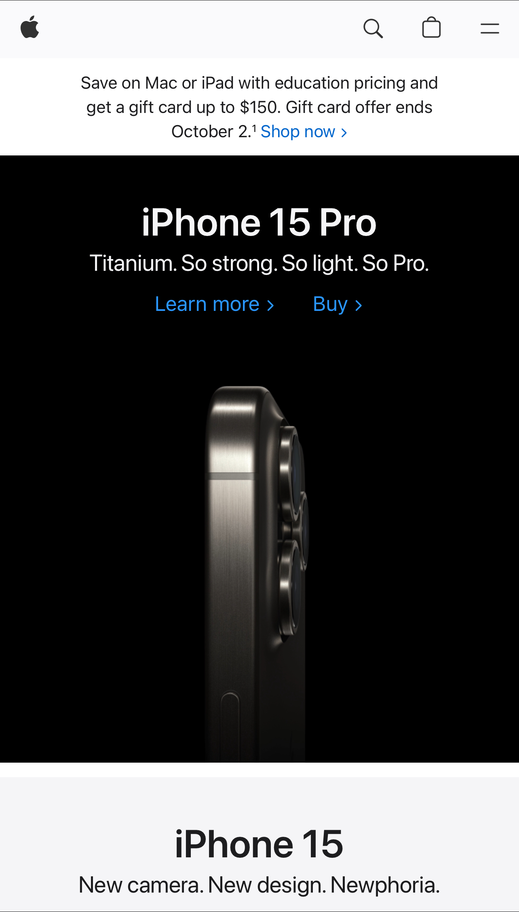

Visual Hierarchy

Apple
apple.comApple’s home page shows a great example of how their homepage uses visual hierarchy. The site is currently advertising the new iPhone 15 Pro, which is what would many people visiting the site would want to buy. It is placed on the top of the site with links with product information and a link to buy the phone through the Apple Store. The mobile interface and desktop sites complements each other since they both allow the user to find information very quickly if they are in a rush. Apple’s current ad campaigns are above the iPhone div section but it is not distracting from the main focus of the site. The font and colors used are consistent of the Apple brand, and contrasts with each other very well.
Contrast
The Church of Jesus Christ of Latter-day Saints
churchofjesuschrist.orgThe Church homepage does a great job with using contrast. The main focus on the homepage at the time this snapshot was taken was General Conference. The blue and white that is used on various parts of the site did not distract from the focal picture of the Savior that is being used. The colors are not distracting and keeps the page very clean. The white text that is used with the blue is also very easy to read and blends in with the site.
White Space and Clean Design
AT&T
att.comAt&t home page does a great job of keeping both the desktop and mobile homepage clean and does a great job of using white space. On screenshot, they are advertising to new customer that wants to upgrade to the new iPhone. All of the information is in one box, with no background color. The information in the box is very easy to read and all of the related information is grouped together. If a user was swipe to the right to the next box, there will be information or advertisements on other products and services, all catering to different groups of customers. The site itself is clean, with the white space clearly showing separation of pictures and tex. There is also enough white space to show the buttons so that it is very easy to find.